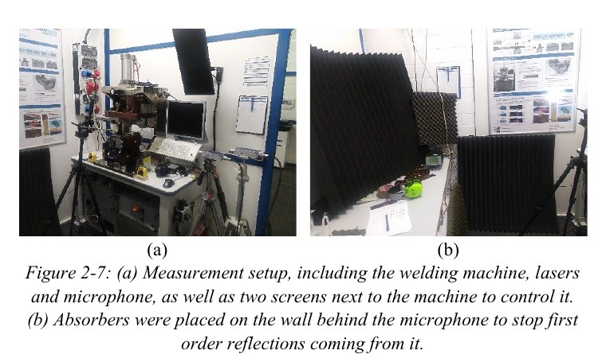
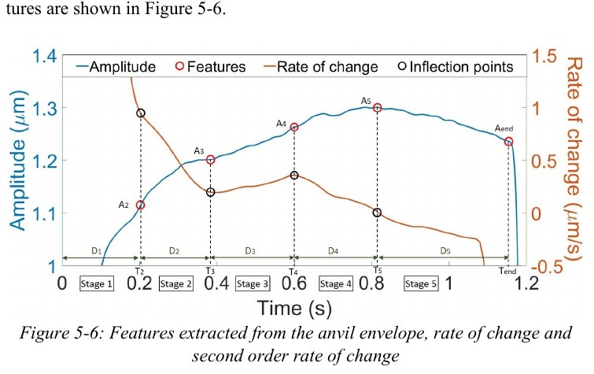
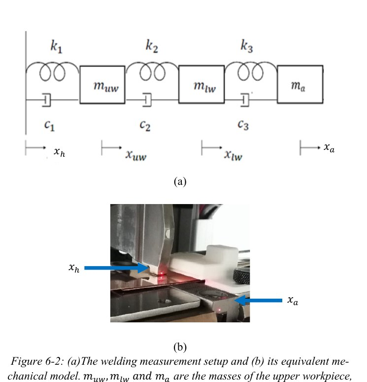

How do you know when an ultrasonic weld is strongest—while the weld is still happening?
Ultrasonic metal welding is fast, automated and energy-efficient, but weld strength can fluctuate for reasons that are difficult to observe directly. Existing monitoring research often relied on data-driven black boxes, which can be hard to interpret or transfer to new welding conditions. My doctoral work explored a knowledge-driven alternative: use the measured vibrations of the welding machine itself to identify process stages and monitor the evolution of weld strength in real time.
Measure a violent, fast process without disturbing it.
Horn and anvil vibrations were measured with laser Doppler vibrometers. Measuring close to the horn tip was difficult because particles ejected during welding interrupted the laser beam, so a 3D-printed suction system was developed to clear the measurement path. Weld strength was then measured separately so the vibration data could be related back to process outcome.

Turn raw vibration signals into process-state information.
The data pipeline isolated the welding-frequency component, converted measured velocity into displacement, extracted the vibration envelope and smoothed it. Changes in the envelope and its rate of change were then used to identify transitions between welding stages.
The anvil vibration was the more robust monitoring signal. A decrease in anvil vibration amplitude—detected through a change of sign in its rate of change after the stage-4 peak—provided a practical criterion for entering the maximum-strength stage.
Estimate strength from physically meaningful features.
Rather than feed raw measurements directly into a black-box model, I extracted features tied to known welding stages: stage times and durations, vibration amplitudes, ratios and slopes. Correlation and partial-correlation analysis were used to select non-redundant features, followed by robust single and multiple linear regression.

The best three-variable regression combined horn/anvil vibration ratios and the rate of change of the anvil vibration. It reached R² = 0.36, compared with R² = 0.13 when using welding time alone.
Use an equivalent mechanical model to reason about what the measurements mean.
To explore transferability beyond one machine and one workpiece configuration, I built an equivalent mechanical model using masses, springs and dampers to represent the horn-workpiece-anvil chain. Domain knowledge constrained the possible parameter ranges for each welding stage, reducing an otherwise under-constrained problem.

A sliding-window brute-force search tested parameter combinations by simulating the anvil response and comparing it with measurements. The model reproduced the first three stages reasonably well but did not model the critical later stages accurately enough, which identified the next research constraint rather than hiding it.
A monitoring approach with a clear engineering decision.
- Real-time, knowledge-driven stage monitoring is feasible using horn and especially anvil vibrations.
- The full acquisition and processing chain for the studied process ran in about 65 ms.
- Process-informed vibration features improved weld-strength estimation over welding time alone.
- Numerical and experimental work showed airborne sound was too complex and contaminated to be a useful monitoring route in this setup.
- The mechanical-model work clarified where the current physical understanding was sufficient—and where it was not.